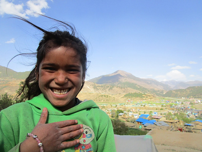

This page is more about reflecting my activities while I am not starring at my computer screen. Lets start with my interest. I am interested in -- Hiking and cycling; -- Watching movies (my recent favorite are: Uncut Gems (2019) and Good Time (2017) by Josh Safdie and Benny Safdie); -- Reading books (currently reading: 21 Lessons for the 21st Century by Yuval Noah Harari and The Selfish Gene by Richard Dawkins); -- Sketching (but don't know how to draw a straight line :)); -- Learning Morse code (it seems interesting, but I'm still in infancy and trying to remember ._ _... _._. _..)
In the following section, I will be reflecting my recent years in around four/five photos.
The year of Pandemic: 2020
Till now, this year 2020, has been mostly the desk-based work, so far.
With these extra saved hours for not having to commute. I am learning the data science. This enthusiasm helped me in preparation of this website, also I have recently prepared a R package analyzeJ2Kmodel, which will be helpful during the initial setup of the JAMS/J2000 hydrological model . Mainly, I am following "R for Data Science" by Garrett Grolemund and Hadley Wickham and also taking the bits and pieces of the "Johns Hopkins University Courses on R programming".

Coffee in Pashupatinath temple area
Landscape of Lalitpur, area
I usually go for the short hikes during the weekends. The photo on the left is from Pashupatinath temple area a famous and religious Hindus temple complex. Many people from Nepal and India visit this place. The Baghmati River that flows near from the temple, (not clearly visible in this photo) is the main source of water to the valley. Kathmandu valley lies in this Baghmati River basin and has both the religios and cultural significance. Likewise, the second image is from the Lalitpur area, I was hiking on that area on January. The landscape is surreal and ideal place for the short hike during the weekends. The photo reflects the livelihood style, housing pattern, topography of the place.
Oh! I had nearly forgot about the workshop we had on February with our partner. The workshop was more focused on understanding the capabilities and areas to strength/empower. The collaborative understanding highlighted the need for improving the data management and support in the analysis. The different variable especially the duration of this pandemic will reflect how it will unravel in the future( as of June 2020). During the future event, I will be mostly sharing on the data analysis approaches, use of R, GIS and hydrological modelling tools for the water resource management , therefore fearing that the online will not be as effective as in person. Lets hope the curve will flatten soon.

Recent workshop on water resouce management
A house, small and beautiful
Multi-scale year: 2019
During the year 2019, I was mostly working for the Resource Book: Multiscale Integrated River Basin Management from a Hindu Kush Himalayan Perspective. I am one of the co-author in the first chapter: Conceptual understanding of river basin drivers and their implications for Integrated River Basin Management (IRBM). It lays the foundation of the concept of the IRBM and highlights the significance, for the better understanding of river systems. Additionally, I was also the part of the few training/workshops for supporting the water resource management.

While working for the book, it was a awesome experience collaborating with the different authors and experts. As I was coordinating with the different authors for the different modules of the book, I was able to understand the different dimentions and the holistic approach of the river basin management. We were also able to get the input/review from the external reviewers who were been working in the same field for years; apart from the experts from ICIMOD. This was really helpful to get in-depth understanding on the topic.
For me, the approach of co-learning, and co-creating the knowledge on data analysis and water resouce management with the collaborators was win-win scenario. I along with my supervisor and collegue shared the idea on downscaling approaches and evaluated the future change in temperature and precipitation patterns. in the small catchment of the Himalyan region. The different trainings and workshops helped in enhancement of the institutional capacity, and the participants learned about the concepts and different aspects of Global Climate Models.

International forum on the Cryosphere and Society initiative, that bought together the experts from different parts of the world, who were working in the Himalayan region. The climate change-induced cryospheric changes, water availbility in the downstream, frequency and intensity of the hazards and its socioecological impact, mountain ecosystem were some of the interesting topics discussed in the workshop. This time was helpful in getting insigts on the cyosphere and climate of the region.
This year provided me ample opportunities to learn, as well as share the information that I had. During the fourth international conference on "Mountains in the changing world", October 2019, I presented about the Karnali River Basin of western Nepal, highlighting the need of the detailed analysis on the future scenario and its significance for the water resource management. It was appreciated by the particpants and had a fruitful discussion.

The year of exploration: 2018
 My first travel, to India, and for the training as a trainer. What a beautiful opportunity. The professionals and academics who were working in the water resource management sector were the participants. I was part of the Training on hydrological modelling using JAMS/J2000 enhances Afghan expertise in hydrological dynamics and water availability assessment
My first travel, to India, and for the training as a trainer. What a beautiful opportunity. The professionals and academics who were working in the water resource management sector were the participants. I was part of the Training on hydrological modelling using JAMS/J2000 enhances Afghan expertise in hydrological dynamics and water availability assessment
 I was a participant for the science and training wokrshop, IITM, Pune. Pune of India is a great place to be due to its managed landsclape, presence of universities and governments investment in information and technology in the area. During the training workshop we learned on the regional downscaling approach, and I was able sot share my experience of hydrological modelling, here is a short blog about it.
I was a participant for the science and training wokrshop, IITM, Pune. Pune of India is a great place to be due to its managed landsclape, presence of universities and governments investment in information and technology in the area. During the training workshop we learned on the regional downscaling approach, and I was able sot share my experience of hydrological modelling, here is a short blog about it.
 It was already late in the evening, and therefore we were not able to go inside the palace but this was really beautiful. Actually, the Red Fort Complex is the UNESCO heritage site, that was built as the palace fort Shan Jahan. The lighting in the evening was mesmerizing, we just watched it and stayed for nearly two hours praising the elegance of artificial lights and historical monuments. It is near to Old Delhi, and one of the memorable place that I have been.
It was already late in the evening, and therefore we were not able to go inside the palace but this was really beautiful. Actually, the Red Fort Complex is the UNESCO heritage site, that was built as the palace fort Shan Jahan. The lighting in the evening was mesmerizing, we just watched it and stayed for nearly two hours praising the elegance of artificial lights and historical monuments. It is near to Old Delhi, and one of the memorable place that I have been.
 Nepal is rich in diversity of plants, animals, socio-cultural practices. There is altitude gradient from about 500masl to 8848 masl, within an span of 150 to 250 kilometers (from South to North). Likewise, within an span of about 880 kilometers there is diversity in the landscape, ecology, socio-cultural attributes and livelihood style (from East to West). Nepal is homeland for the interplay between the Westerlies and Asian monsoon. Becasue of this diverse lanscape within small area, I love travelling to different parts of Nepal. I have shared my recent visit to western Nepal in Jumla and Humla in these blogs.
 This year, was full of experiences and learnings. Travelled to different parts of Nepal and India, and explored about the climate change, data analysis, hydrological modelling in more details . Participanted in some of the social event, and meet with the interesting people.It's always exciting for me to meet an expert in the field because of their dedicated performance and hard work. At the same time, it's inspiring how they are enjoying the work, which encourages on working with passion.
This year, was full of experiences and learnings. Travelled to different parts of Nepal and India, and explored about the climate change, data analysis, hydrological modelling in more details . Participanted in some of the social event, and meet with the interesting people.It's always exciting for me to meet an expert in the field because of their dedicated performance and hard work. At the same time, it's inspiring how they are enjoying the work, which encourages on working with passion.
Assemblage year: 2017
Year 2017 was all about field travel and related studies. I took multiple field visits at the different parts of Nepal, for supporting the governmental policy in preparation of the community based adaptation practices. Likewise, travelled to Karnali watershed for understanding the aquatic biodiversity (especially macroinvertebrates) and exploring the impact of climate change and developmental activities

On the way to collect the sample

Basantapur Durbar Square, Kathmandu
The visit to Karnali watershed was really interesting and inspiring for me because I was supporting in the field visit for my teacher, who had taught me during my school days. Its great feeling to be connected with the teachers who had highlighted the significance of scientific research during my school days. Those act of generating/supporting curiosity has played vital role in me for working in the research sector.

Interaction with the community members

Observing the field data

Digiting the information

Beautiful landscape of Bajura
Community are the source of knowledge. I was mostly interacting with them on the local challenges, mitigating approach and how government policy can support. To hear the local voices, prioritize it with their consultaion, and encourage the government to prioritize them in the plan of action was challenging yet it was fun and informative (Photo:1 of 4).
Understanding the field reality is one dimention, another dimention is how to properly digitize/arrange the data in effective way so that the required information could be extracted efficiently and the authorities/stakeholders can quickly get what they are searching for. I remember sitting together for the late hours, with my friends to manage these vital data (Photo:2 of 4).
We tried not to miss a single piece of data/information, as each word mattered. While we were on the field, we tried to make sure that we have saved the information in multiple formats, making sure we do not loose any small pieces. For example, we were taking the physio-chemical properties of water, we took the photos and also wrote it in paper, so that we do not miss or loss any information (Photo:3 of 4).
The hard work in the field is refreshed by the beautiful landscape, healthy food, cultural identity and hospitality of the local people(Photo: 4 of 4).
Vote of thanks: If you have reached to this end, thank you so much for dropping by. I am still working, if you want to have a coffee with me, I am just an email away from you all.
This website is possible only due to the code shared by Yen-Chia ( http://yenchiah.me/); thanks you so much.